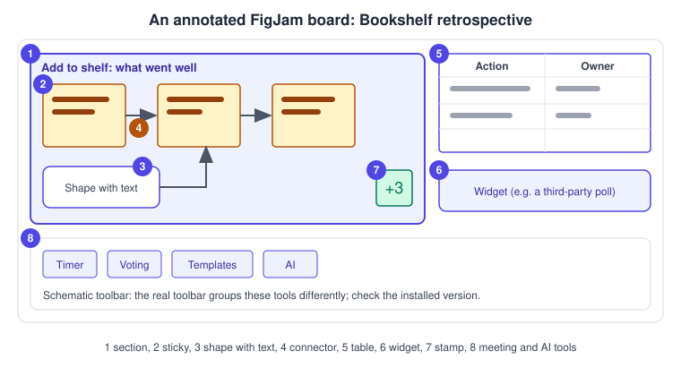
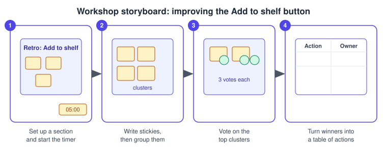

FigJam
|
This content was generated with the assistance of AI and should be verified against the official documentation before being relied on in production. |
This page was written on 2026-10-30 against the UI3 interface. FigJam is Figma’s online whiteboard, a separate file type next to Figma Design. According to the Figma Learn guide to FigJam it is available on any team or plan, but some features need more. Creating content needs a Full, Dev or Collab seat, while a View seat is limited to viewing and commenting (see Plans, Seats and AI Credits). Starting a voting session needs a Professional, Education, Organization or Enterprise team, and FigJam AI tools are available on paid plans. FigJam itself is generally available; the Figma help pages consulted for this page do not label any FigJam AI feature as beta.
The running example is a retrospective workshop for the Bookshelf team about the Add to shelf button. The page first explains each building block and then walks through the workshop. Research synthesis with FigJam is covered in Research, Personas and Journey Maps, and flow diagrams in Information Architecture and User Flows.
The board at a glance
Most tools live in the bottom toolbar, and meeting tools (timer, voting and music) sit in a panel at the top of the file. The location of that panel is described differently in two help articles (upper right and upper left), so look for the Timer, voting, and music control in the file you have open. The quick actions bar opens with Cmd / on macOS or Ctrl / on Windows and finds most tools by name.

-
A section that groups the retrospective items.
-
A sticky note.
-
A shape with text.
-
A connector between stickies.
-
A table of actions and owners.
-
A widget.
-
A stamp.
-
Meeting and AI tools.
Source: Figma Learn: Guide to FigJam
Stickies
Stickies are the virtual equivalent of paper sticky notes and can contain only text. They are square or rectangular: the height follows the text, the width can be dragged and the corners scale the sticky evenly. Colours are assigned randomly when a file opens and can be changed from the settings bar. Your name is added at the bottom automatically and can be toggled off. Unlike shapes with text, stickies cannot be rotated.
| Action | macOS | Windows |
|---|---|---|
Create a sticky |
S |
S |
Quick create (new sticky beside the selected one) |
Cmd Return |
Ctrl Enter |
Duplicate |
Cmd D |
Ctrl D |
Duplicate by dragging |
Alt drag |
Alt drag |
Shapes and shapes with text
Shapes come in three groups: Basic (square, ellipse, diamond), Flowchart (cylinder, document, hexagon) and Advanced (cloud, database, user). Third-party sets such as AWS, Azure, Google Cloud and Kubernetes also exist. Basic and flowchart shapes work on any plan; advanced shapes need a paid plan. Choose the shape tool in the toolbar, use More shapes for a full picker, or type a shape name in the quick actions bar. R draws a square and O an ellipse. Shapes can contain text; resizing a shape changes the space for text, not the font size. Cmd Return (macOS) or Ctrl Enter (Windows) quick-creates a new shape next to the selected one.
Source: Figma Learn: Shapes in FigJam
Connectors
Connectors come as bent, curved and straight, and are chosen from the shapes menu. X or Shift L draws a bent connector and L a straight one; the tool stays active until V or Esc is pressed. Connectors snap to the sides of shapes and stickies and move with them. Holding Cmd (macOS) or Ctrl (Windows) while moving an endpoint places it anywhere on an object. A connector can carry a label, a solid or dashed style, a thin or thick stroke and a different endpoint (none, arrow, triangle or diamond) at each end.
Source: Figma Learn: Creating connectors
Sections
A section groups and organises objects. Press Shift S or use the section tool, then click for a square or drag for a custom size; alternatively select objects, right-click and choose Create section. A section can be locked entirely (Lock all) or only its background (Lock background only), can be hidden without deleting its content, can offer a section template next to its title and can be set as the file thumbnail. Delete removes a section with its contents; Cmd Delete on macOS or Ctrl Backspace on Windows removes the section but keeps its contents.
Tables
Press Shift T (or use the Table icon) and drag to size a table. Cells hold text and stamps. Rows and columns are added with the blue bar or the blue dot on a border, moved with the grabber and duplicated with Cmd D (macOS) or Ctrl D (Windows). Adjacent cells can be merged from the inline toolbar. A table can be exported as an image, PDF or CSV (Cmd Shift E on macOS, Ctrl Shift E on Windows), and a CSV file can be imported with File > Import. Objects placed on top of a table do not stay anchored if the table moves.
Source: Figma Learn: Tables in FigJam
Stamps and emotes
Stamps are emoji-style marks placed on the board or on an object. They stay on the board, stamps attached to an object move with it, and hovering shows who added them. Click Stamp in the toolbar or press E, pick a stamp and click. Emotes are temporary bursts of reaction: open the stamp picker and Shift-click the board. Stamps need can-edit access, while emotes can be used with can-view access too. Sticker packs from libraries add more stamp options.
Widgets
Widgets are interactive objects built by the community. Hover over the pile of recently used icons in the toolbar, choose More, open the Widgets tab and pick a recent widget or browse the Community. You need can-edit access. Widgets are available on all plans, although some are paid. They are visible to everyone in the file and, unless restricted by the developer, can reach file contents and user information, so organisations can limit members to admin-approved widgets. Figma does not support third-party widgets; contact the developer for problems. Writing widgets is covered on Building Widgets.
Templates
Templates start a board from a proven layout. Open the templates option in the bottom toolbar, select the Template tab, hover over a template, click Add template and drag it onto the board. A section can also offer templates through the Templates button next to its title. Templates are available on any team or plan and need can-edit access to the file. Community templates must be duplicated before use.
Timer and voting
The timer is in the Timer, voting, and music panel. Anyone with can-edit access can set it and anyone in the file can start, pause, extend or stop it, so it cannot be restricted to one facilitator. It runs up to 99 minutes and 59 seconds, only one timer is active per file, and music can play along with it.
Voting sessions start from the same panel: enter a prompt, set the votes per person and click Start. Anyone on a Professional, Education, Organization or Enterprise team can start a session, and anyone with can-edit access can vote with the stamp tool on stickies, shapes, text, images and more. Others' votes stay hidden until the session ends, and anyone in the file can end it for everyone. Results appear right away and can be reviewed later in the Results tab.
FigJam AI and Jambot
According to the Figma help pages, FigJam AI tools are available on paid plans and need a Full, Dev or Collab seat. They cover generating boards and diagrams from a prompt (flow charts, Gantt charts and org charts, plus templates for meetings), sorting stickies by theme, summarising stickies, rewriting or translating text, and image tools. Select two or more stickies and use Organize in the selection toolbar to sort or summarise them; Figma’s AI credits page lists summarising and clustering as free actions (see Figma AI Tools).
To generate a board, click Actions in the toolbar, choose Make templates and diagrams, type a prompt and click Make. Adjust the prompt and click Make again for another version. AI output can be inaccurate and should be checked.
Jambot is a widget that brings a ChatGPT-based assistant to a board, with functions such as Ideate, Summarize, Rewrite this and Custom. It is available on Professional, Education (not K-12), Organization and Enterprise plans and needs edit access. Its help article is old, so confirm the function list in the installed widget.
Importing from Miro, Mural and Lucid
FigJam imports PDF exports from Miro, Mural and Lucid, on any team or plan, with can-edit access to the target file. Export the board as a PDF (for Miro as a vector image export), then either click Import in the file browser and choose Import from computer, or use File > Import inside an open FigJam file, and choose the source tool. Each PDF becomes one FigJam file when imported from the file browser.
Stickies, text, shapes and connection lines carry over, although Mural and Lucid stickies become shapes with text. Comments, voting and uploaded files are not imported from Mural or Lucid, comments and right-to-left text are not imported from Miro, and none of the tools offers bulk export, so boards are exported one by one. For Lucid, do not use the Export selection option.
Procedure: run the Add to shelf retrospective

-
Create a FigJam file, press Shift S and drag a section; title it "Add to shelf".
-
Open the Timer, voting, and music panel, set five minutes and start the timer.
-
Everyone presses S and writes stickies about what went well and what to improve; select the stickies and, on a paid plan, use Organize to sort them by theme.
-
Open the panel again, enter "Pick your 3 favourite clusters", set three votes and click Start, then end the session for everyone.
-
Press Shift T, drag a table with Action and Owner columns and fill it with the winning clusters.
What older guides say
-
Guides written when FigJam AI launched describe it as in beta. The current Figma help pages consulted on 2026-10-30 describe it as available on paid plans and do not mark it as beta.
-
A 2022 guide states that FigJam was priced separately. Today the Figma Learn guide says FigJam is available on any team or plan, with Full, Dev, Collab and View seats since 2025-03-11.
-
Guides from before the interface change describe the old UI2 toolbars; UI3 has been mandatory since 2025-04-30.